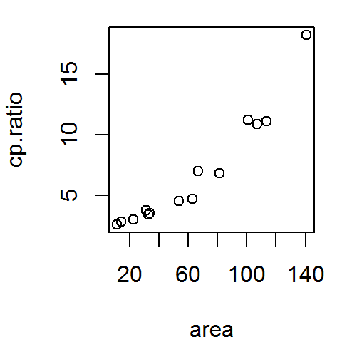
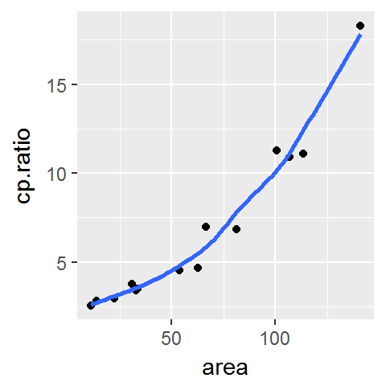
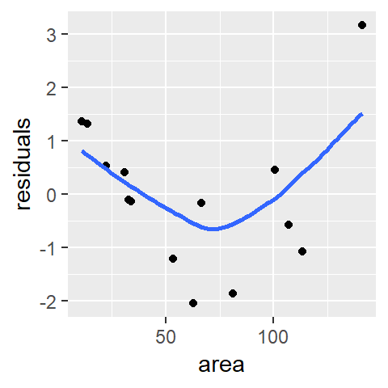

Bivariate analysis
This tutorial makes use of the following R package(s): ggplot2.
This material is intended to supplement pages 87 to 105 of Cleveland’s book.
Bivariate data are datasets that store two variables measured from a same observation (e.g. wind speed and temperature at a single location). This differs from univariate data where only one variable is measured for each observation (e.g. temperature at a single location).
Scatter plot
A scatter plot is a popular visualization tool used to compare values between two variables. Sometimes one variable is deemed dependent on another variable; the latter being the independent variable. Cleveland refers to the former as the response and the latter as the factor. The dependent variable is usually plotted on the y-axis and the independent variable is usually plotted on the x-axis. Other times, one does not seek a dependent-independent relationship between variables but is simply interested in studying the relationship between them.
A scatter plot can be generated using the base plotting environment as follows:
df <- read.csv("http://mgimond.github.io/ES218/Data/ganglion.csv")
plot(cp.ratio ~ area, dat=df)
Or, using ggplot2, as follows:
library(ggplot2)
ggplot(df, aes(x=area, y=cp.ratio)) + geom_point()
The data represent, on the y-axis, the ratio between the ganglion cell density of a cat’s central retina to that of its peripheral density (variable cp.ratio) and, on the x-axis, the cat’s retina surface area (area) during its early development (ranging from 35 to 62 days of gestation).
Fitting the data
Scatter plots are a good first start in visualizing the data, but this is sometimes not enough. Our eyes need “guidance” to help perceive patterns. Another visual aid involves fitting the data with a line.
Parametric fit
Fitting a straight line
A straight line is the simplest fit one can make to bivariate data. A popular method for fitting a straight line is the least-squares method. We’ll use R’s lm() function which provides us with a slope and intercept for the best fit line.
In the base plotting environment, we can do the following:
M <- lm(cp.ratio ~ area, dat=df)
plot(cp.ratio ~ area, dat=df)
abline(M, col="red")
In the ggplot2 plotting environment, we can make use of the stat_smooth function to generate the regression line.
library(ggplot2)
ggplot(df, aes(x=area, y=cp.ratio)) + geom_point() +
stat_smooth(method="lm", se=FALSE)
The se=FALSE option prevents R from drawing a confidence envelope around the regression line.
The straight line is a first order polynomial with two parameters, \(a\) and \(b\), that define an equation that best describes the relationship between the two variables:
\[ CP\ Ratio = a + b (Area) \]
where \(a\) and \(b\) can be extracted from the model M as follows:
coef(M)(Intercept) area
0.01399056 0.10733436 Thus \(a\) =0.014 and \(b\) = 0.11.
Fitting a 2nd order polynomial
A second order polynomial is a three parameter function (\(a\), \(b\) and \(c\)) whose equation \(y = a + bx + cx^2\) defines the curve that best fits the data. We define such a relationship in R using the formula cp.ratio ~ area + I(area^2). Our new lm expression and resulting coefficients follow:
M2 <- lm(cp.ratio ~ area + I(area^2) , dat=df)
coef(M2) (Intercept) area I(area^2)
2.8684792029 -0.0118691702 0.0008393243 The quadratic fit is thus,
\[ y = 2.87 - 0.012 x + 0.000839 x^2 \]
We cannot use abline to plot the predicted 2nd order polynomial curve since abline only draws straight lines. We will need to construct the line manually using the predict and lines functions.
plot(cp.ratio ~ area, dat=df)
x.pred <- data.frame( area = seq(min(df$area), max(df$area),length.out=50) )
y.pred <- predict(M2, x.pred)
lines(x.pred$area,y.pred, col="red")
To do this in ggplot2 simply pass the formula as an argument to stat_smooth:
ggplot(df, aes(x=area, y=cp.ratio)) + geom_point() + stat_smooth(method="lm", se=FALSE, formula= y ~ x + I(x^2) )
Non-parametric fits
LOESS
A more flexible curve fitting option is the LOESS curve (short for local regression). Unlike the parametric approach to fitting a curve, the loess does not impose a structure on the data. The loess curve fits small segments of a regression lines across the range of x-values, then links the mid-points of these regression lines to generate the smooth curve. The range of x-values that contribute to each localized regression lines is defined by the \(\alpha\) parameter which usually ranges from 0.2 to 1. The larger the \(\alpha\) value, the smoother the curve. The other parameter that defines a LOESS curve is \(\lambda\): it defines the polynomial order of the localized regression line. This is usually set to 1 (though ggplot2’s implementation of the loess defaults to a 2nd order polynomial).
The LOESS fit can be computed using the loess() function. It takes as arguments span (\(\alpha\)), and degree (\(\lambda\)).
# Fit loess function
lo <- loess(cp.ratio ~ area, df, span=0.5, degree = 1)
# Predict loess values for a range of x-values
lo.x <- seq(min(df$area), max(df$area), length.out=50)
lo.y <- predict(lo, lo.x)The predicted loess curve can be added using the lines function.
plot(cp.ratio ~ area, dat=df)
lines(lo.x, lo.y, col="red")
In ggplot2 simply pass the method="loess" parameter to the stat_smooth function.
ggplot(df, aes(x=area, y=cp.ratio)) + geom_point() +
stat_smooth(method="loess", se=FALSE, span=0.5)However, ggplot (up to version 2.1, at least) defaults to a second degree loess (i.e. the small regression line elements that define the loess are defined by a 2nd order polynomial and not a 1st order polynomial). If a first order polynomial (degree=1) is desired, you need to include an argument list in the form of method.args=list(degree=1) to the stat_smooth function.
ggplot(df, aes(x=area, y=cp.ratio)) + geom_point() +
stat_smooth(method="loess", se=FALSE, span=0.5,
method.args=list(degree=1) )
Residuals
Fitting the data with a line is just the first step in EDA. Your next step should be to explore the residuals. The residuals are the distances (along the y-axis) between the observed points and the fitted line. The closer the points to the line (i.e. the smaller the residuals) the better the fit.
The residuals can be computed using the residuals() function. It takes as argument the model object. For example, to extract the residuals from the linear model M computed earlier type,
residuals(M) 1 2 3 4 5 6 7 8 9 10
1.3596154 1.3146525 0.5267426 -0.1133131 -0.1421694 0.3998247 -1.2188692 -2.0509148 -1.8622085 -0.1704418
11 12 13 14
-0.5788861 0.4484394 -1.0727624 3.1602905 Residual-dependence plot
We’ll create a residual dependence plot to plot the residuals as a function of the x-values. We’ll do this using ggplot so that we can also fit a loess curve to help discern any pattern in the residuals (the ggplot function makes it easier to add a loess fit than the traditional plotting environment).
res1 <- data.frame( area = df$area, residuals = residuals(M))
ggplot(res1, aes(x=area, y=residuals)) + geom_point() +
stat_smooth(method="loess", se=FALSE, span=1,
method.args=list(degree=1) )
We are interested in identifying any pattern in the residuals. If the model does a good job in fitting the data, the points should be uniformly distributed across the plot and the loess fit should approximate a horizontal line. With the linear model M, we observe a convex pattern in the residuals suggesting that the linear model is not a good fit. We say that the residuals show dependence on the x values.
Next, we’ll look at the residuals from the second order polynomial model M2.
res2 <- data.frame( area = df$area, residuals = residuals(M2))
ggplot(res2, aes(x=area, y=residuals)) + geom_point() +
stat_smooth(method="loess", se=FALSE, span=1,
method.args=list(degree=1) )
There is no indication of dependency between the residual and the area values. The second order polynomial is an improvement over the first order polynomial. Let’s look at the loess model.
res2 <- data.frame( area = df$area, residuals = residuals(lo))
ggplot(res2, aes(x=area, y=residuals)) + geom_point() +
stat_smooth(method="loess", se=FALSE, span=1,
method.args=list(degree=1) )
The loess model also seems to do a good job in smoothing out any overall pattern in the data.
You may ask “if the loess model does such a good job in fitting the data, why bother with polynomial fits?” If you are seeking to generate a predictive model that explains the relationship between the y and x variables, then a mathematically tractable model (like a polynomial model) should be sought. If the interest is simply in identifying a pattern in the data, then a loess fit is a good choice.
Next we will look for any homogeneity in the residuals.
Spread-location plot
The M2 and lo models do a good job in eliminating any dependence between residual and x-value. Next, we will check that the residuals do not show a dependence with fitted y-values. This is analogous to univariate analysis where we checked if residuals increased or decreased with increasing medians across factors. Here we will compare residuals to the fitted CP.ratio values (think of the fitted line as representing a level across different segments along the x-axis). We’ll generate a spread-level plot of model M2’s residuals (note that in the realm of regression analysis, such plot is often referred to as a scale-location plot). We’ll also add a loess curve to help visualize any patterns in the plot (this reproduces fig 3.14 in Cleveland’s book).
sl2 <- data.frame( std.res = sqrt(abs(residuals(M2))),
fit = predict(M2) )
ggplot(sl2, aes(x=fit, y=std.res)) + geom_point() +
stat_smooth(method="loess", se=FALSE, span=2,
method.args=list(degree=1) )
The function predict() extracts the y-values from the fitted model M2 and is plotted along the x-axis. It’s clear from this plot that the residuals are not homogeneous; they increase as a function of increasing fitted CP ratio. Note that we would observe this monotone spread with our loess model as well. At this point, we should look into re-expressing the data.
Checking residuals for normality
If you are interested in conducting a hypothesis test (i.e. addressing the question “is the slope significantly different from 0”) you will likely want to check the residuals for normality since this is an assumption made when computing a confidence interval and a p-value. Here, we’ll use the built-in qqnorm and qqline functions.
qqnorm(M2$residuals)
qqline(M2$residuals)
Here, the residuals seem to stray a little from a normal distribution.
Re-expressing the data
The monotone spread can be problematic if we are to characterize the spread of cp.ratio as being the same across all values of area. To remedy this, we can re-express the cp.ratio values. Ratios are good candidates for log transformation. We will therefore fit a new linear model to the data after transforming the y-value.
df.log <- data.frame( area = df$area, cp.ratio.log = log(df$cp.ratio))
M3 <- lm(cp.ratio.log ~ area, dat=df.log)Next, let’s plot the transformed data and add the fitted line.
plot(cp.ratio.log ~ area, dat=df.log)
abline(M3, col="red")
At first glance, the log transformation seems to have done a good job at straightening the batch of values. Next, let’s look at the residual dependence plot.
res3 <- data.frame( area = df.log$area, residuals = residuals(M3))
ggplot(res3, aes(x=area, y=residuals)) + geom_point() +
stat_smooth(method="loess", se=FALSE, span=2,
method.args=list(degree=1) )
Logging the y values has eliminated the residual’s dependence on area. Next, let’s assess homogeneity in the residuals using the s-l plot.
sl3 <- data.frame( std.res = sqrt(abs(residuals(M3))),
fit = predict(M3))
ggplot(sl3, aes(x=fit, y=std.res)) + geom_point() +
stat_smooth(method="loess", se=FALSE, span=2,
method.args=list(degree=1) )
We do not observe a systematic increase in spread, the log transformation seems to have removed the monotone spread as well as straighten the relationship between variables.
Finally, we’ll check for normality of the residuals.
qqnorm(M3$residuals)
qqline(M3$residuals)
An added benefit of re-expressing the data seems to be a slight improvement in the normality of the residuals.
 Manny Gimond (2018)
Manny Gimond (2018)